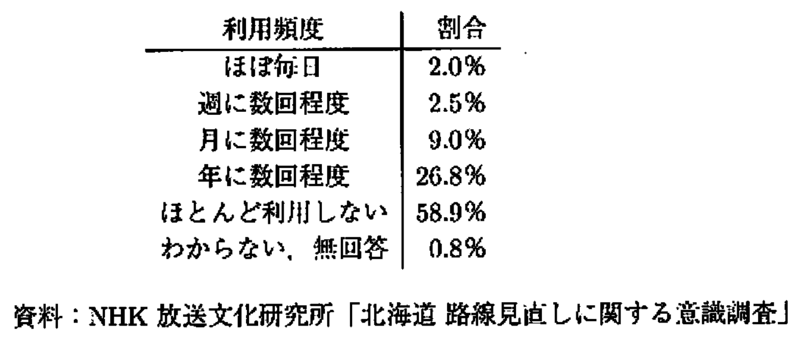

第2回演習：統計的推定
標本調査法、点推定（不偏性・一致性）、区間推定（母平均・母比率）、サンプルサイズの決定について扱います。
パート1：標本調査法
問題1：標本抽出法の選択（2019年11月 問6）
さらなる満足度向上のため，A 航空では，ある日の搭乗客の一部に対して，運航は時間通りだったか，揺れは少なかったか，客室乗務員に不満はなかったか等を調査することにした。調査方法として，A 航空では次の I 〜 III の調査の方法を考えた。
I. 当日のすべての搭乗客の名簿を作成し，無作為に 200 人に調査の電子メールを送付する。
II. 午前に出発する便のグループと午後に出発する便のグループのそれぞれから無作為に 100 人の搭乗客を選び，チェックイン時に調査用紙を渡す。
III. 当日の便の中から 2 便を無作為に選び，それらの便の搭乗客全員に降機時に調査用紙を渡す。
I 〜 III の調査法の組合せとして，次の①〜⑤のうちから適切なものを一つ選べ。
- I：系統抽出法 II：集落抽出法 III：二段抽出法
- I：系統抽出法 II：層化抽出法 III：集落抽出法
- I：単純無作為抽出法 II：系統抽出法 III：二段抽出法
- I：単純無作為抽出法 II：層化抽出法 III：集落抽出法
- I：層化抽出法 II：集落抽出法 III：全数調査
解答例と解説
正解：4
【解説】
- I (単純無作為抽出法)：母集団（当日のすべての搭乗客）から、構成要素（搭乗客）を直接無作為に抽出する方法です。これは単純無作為抽出法です。系統抽出法ではありません（系統抽出法は、名簿の最初から等間隔に選ぶ方法）。
- II (層化抽出法)：母集団を「午前出発便」と「午後出発便」という2つのグループ（層）に分け、それぞれの層から無作為に標本を抽出する方法です。これは層化抽出法です。
- III (集落抽出法)：母集団を「便」という小集団（集落・クラスター）に分け、その中から無作為にいくつかの便を選び、選ばれた便の搭乗客全員（全数）を調査する方法です。これは集落抽出法です。
よって、正しい組み合わせは ④ です。
【ポイント】
- 単純無作為抽出法：くじ引きのように選ぶ。
- 層化抽出法：グループに分けて、各グループから少しずつ選ぶ（比率は合わせることが多い）。
- 集落（クラスター）抽出法：グループに分けて、選んだグループの中身を全部調べる。
パート2：点推定（不偏性・一致性）
問題2：推定量の性質（2021年6月 問14）
\(n\) を 3 以上の自然数とし，確率変数 \(X_1, \dots, X_n\) が互いに独立に平均 \(\mu\)，分散 \(\sigma^2\) (\(\sigma^2 > 0\)) のある分布に従うとする。\(\mu\) の 4 つの推定量として，次の \(\hat{\mu}_1, \hat{\mu}_2, \hat{\mu}_3, \hat{\mu}_4\) を考える。
〔1〕 4 つの推定量の不偏性に関する説明として，次の①〜⑤のうちから適切なものを一つ選べ。
- \(\hat{\mu}_1, \hat{\mu}_2, \hat{\mu}_3\) は \(\mu\) の不偏推定量であるが，\(\hat{\mu}_4\) は不偏推定量ではない。
- \(\hat{\mu}_1, \hat{\mu}_2, \hat{\mu}_4\) は \(\mu\) の不偏推定量であるが，\(\hat{\mu}_3\) は不偏推定量ではない。
- \(\hat{\mu}_1, \hat{\mu}_3, \hat{\mu}_4\) は \(\mu\) の不偏推定量であるが，\(\hat{\mu}_2\) は不偏推定量ではない。
- \(\hat{\mu}_2, \hat{\mu}_3, \hat{\mu}_4\) は \(\mu\) の不偏推定量であるが，\(\hat{\mu}_1\) は不偏推定量ではない。
- \(\hat{\mu}_1, \hat{\mu}_2, \hat{\mu}_3, \hat{\mu}_4\) はすべて \(\mu\) の不偏推定量である。
〔2〕 4 つの推定量それぞれの分散について，次の①〜⑤のうちから適切なものを一つ選べ。
- \(\hat{\mu}_1\) の分散が最も小さい。
- \(\hat{\mu}_2\) の分散が最も小さい。
- \(\hat{\mu}_3\) の分散が最も小さい。
- \(\hat{\mu}_4\) の分散が最も小さい。
- 4 つの推定量の分散はすべて等しい。
解答例と解説
正解：〔1〕 5, 〔2〕 1
【解説】
〔1〕不偏性の確認
「不偏推定量である」とは、その推定量の期待値 \(E[\hat{\mu}]\) が、真の母数 \(\mu\) と等しくなることを指します。 以下の期待値の性質（線形性）を利用して計算します。
＜期待値の計算ルール＞
- 定数は外に出る： \(E[cX] = cE[X]\)
- 和は分けられる： \(E[X + Y] = E[X] + E[Y]\)
- 今回の前提： すべての \(i\) について \(E[X_i] = \mu\)
-
\(\hat{\mu}_1\) の期待値：
\[E[\hat{\mu}_1] = E\left[ \frac{1}{n}\sum_{i=1}^n X_i \right] = \frac{1}{n}\sum_{i=1}^n E[X_i] = \frac{1}{n} \underbrace{(\mu + \mu + \dots + \mu)}_{n個} = \frac{1}{n} \cdot n\mu = \mu\] -
\(\hat{\mu}_2\) の期待値：
\[E[\hat{\mu}_2] = E\left[ \frac{1}{2}(X_1 + X_n) \right] = \frac{1}{2}(E[X_1] + E[X_n]) = \frac{1}{2}(\mu + \mu) = \mu\] -
\(\hat{\mu}_3\) の期待値：
\[E[\hat{\mu}_3] = E[X_1] = \mu\] -
\(\hat{\mu}_4\) の期待値：
\[E[\hat{\mu}_4] = E\left[ \frac{2}{n(n+1)}\sum_{i=1}^n i X_i \right] = \frac{2}{n(n+1)}\sum_{i=1}^n i E[X_i] = \frac{2}{n(n+1)}\sum_{i=1}^n i \mu\]ここで、等差数列の和の公式（1からnまでの整数の和） \(\sum_{i=1}^n i = \frac{n(n+1)}{2}\) を使います。
\[E[\hat{\mu}_4] = \frac{2\mu}{n(n+1)} \cdot \frac{n(n+1)}{2} = \mu\]
計算の結果、4つともすべて期待値が \(\mu\) となったため、すべて不偏推定量です。 よって、正解は 5 です。
〔2〕分散の比較
どの推定量の分散（散らばり具合）が最も小さいか（＝最も精度が良いか）を比較します。 以下の分散の性質を利用して計算します。問題文に「互いに独立」とあるのが重要です。
＜分散の計算ルール＞
- 定数倍は2乗になって外に出る： \(V[cX] = c^2 V[X]\)
- 独立な変数の和の分散は、分散の和になる： \(V[X + Y] = V[X] + V[Y]\) （共分散が0になるため）
- 今回の前提： すべての \(i\) について \(V[X_i] = \sigma^2\)
-
\(\hat{\mu}_1\) の分散： 係数 \(1/n\) は2乗されて外に出ます。
\[V[\hat{\mu}_1] = V\left[ \frac{1}{n}\sum X_i \right] = \frac{1}{n^2} \sum V[X_i] = \frac{1}{n^2} \cdot n\sigma^2 = \frac{\sigma^2}{n}\] -
\(\hat{\mu}_2\) の分散： 係数 \(1/2\) は2乗されて \(1/4\) になります。
\[V[\hat{\mu}_2] = V\left[ \frac{1}{2}(X_1 + X_n) \right] = \frac{1}{4}(V[X_1] + V[X_n]) = \frac{1}{4}(\sigma^2 + \sigma^2) = \frac{2\sigma^2}{4} = \frac{\sigma^2}{2}\] -
\(\hat{\mu}_3\) の分散：
\[V[\hat{\mu}_3] = V[X_1] = \sigma^2\] -
\(\hat{\mu}_4\) の分散：
係数 \(\frac{2}{n(n+1)}\) は2乗されます。また、\(\sum i X_i\) の分散は \(\sum i^2 V[X_i]\) となります（各項の係数 \(i\) も2乗されるため）。
\[V[\hat{\mu}_4] = \left( \frac{2}{n(n+1)} \right)^2 \sum_{i=1}^n V[i X_i] = \frac{4}{n^2(n+1)^2} \sum_{i=1}^n i^2 \sigma^2\]ここで、2乗の和の公式 \(\sum_{i=1}^n i^2 = \frac{n(n+1)(2n+1)}{6}\) を使います。
\[V[\hat{\mu}_4] = \frac{4\sigma^2}{n^2(n+1)^2} \cdot \frac{n(n+1)(2n+1)}{6} = \frac{2(2n+1)}{3n(n+1)}\sigma^2\]
＜大小比較＞ \(n \ge 3\) のとき、それぞれの分散の係数を比較します。
- \(\hat{\mu}_1\): \(\frac{1}{n}\)
- \(\hat{\mu}_2\): \(\frac{1}{2}\)
- \(\hat{\mu}_3\): \(1\)
- \(\hat{\mu}_4\): \(\frac{2(2n+1)}{3n(n+1)} = \frac{4n+2}{3n^2+3n}\)
明らかに \(\frac{1}{n}\) は \(1/2\) や \(1\) より小さいです。\(\hat{\mu}_1\) と \(\hat{\mu}_4\) を比べます。
一方、\(\hat{\mu}_1\) の係数 \(\frac{1}{n}\) を通分するために分母分子に \(3(n+1)\) を掛けると、
分子を比較すると、
\((\hat{\mu}_4\text{の分子}) - (\hat{\mu}_1\text{の分子}) = (4n+2) - (3n+3) = n - 1\)
\(n \ge 3\) なので \(n-1 > 0\) です。
つまり、\(\hat{\mu}_4\) の分散の方が \(\hat{\mu}_1\) より大きくなります（精度が悪い）。
したがって、分散が最も小さいのは \(\hat{\mu}_1\) です。 よって、正解は 1 です。
【ポイント】
- 分散の加法性：独立なら \(V(X+Y) = V(X)+V(Y)\)。
- 係数の2乗：分散の計算では係数は必ず2乗されて外に出る（\(V(cX) = c^2 V(X)\)）。
- 有効性：一般に、すべてのデータを使って単純に平均をとる \(\bar{X}\) (\(\hat{\mu}_1\)) が、最も分散が小さく（有効性が高く）、精度の良い推定量になります。
パート3：区間推定（母比率）
問題3：母比率の区間推定（2018年11月 問12）
次の表は，2017 年に実施された，JR 北海道の利用状況に関する調査結果である。調査は北海道の 18 歳以上の男女 2067 人に行われ，回答数は 1338 人であった。この調査結果は，母集団を北海道の 18 歳以上の男女とし，標本サイズ 1338 の単純無作為抽出に基づくものとみなす。

{kind=link}
ほぼ毎日利用した人の割合の 95%信頼区間として，次の①〜⑤のうちから最も適切なものを一つ選べ。
- \(0.020 \pm 0.002\)
- \(0.020 \pm 0.008\)
- \(0.020 \pm 0.014\)
- \(0.020 \pm 0.020\)
- \(0.020 \pm 0.026\)
解答例と解説
正解：2
【解説】
母比率を \(p\)、標本比率を \(\hat{p}\)、標本サイズを \(n\) とします。 問題文の表より、ほぼ毎日利用した人の標本比率は \(\hat{p} = 2.0\% = 0.020\) です。 標本サイズ（回答数）は \(n = 1338\) です。
このときの標準誤差は以下の式で推定されます。
標本比率の定義から導出：
標本比率 \(\hat{p}\) は、\(n\) 回の試行中の成功回数 \(X\) を用いて定義されます：
ここで \(X\) は二項分布 \(B(n, p)\) に従い、以下の性質を持ちます：
- \(E[X] = np\)（期待値）
- \(\text{Var}[X] = np(1-p)\)（分散）
標本比率の分散を求めると：
標準誤差は分散の平方根なので：
しかし、真の母比率 \(p\) は未知なので、標本比率 \(\hat{p}\) で推定します：
数値を代入して計算します。
信頼区間の構成：
\(n\) が十分に大きいとき、中心極限定理により：
95%信頼区間を求めるため、\(P\left(-1.96 < \frac{\hat{p} - p}{SE(\hat{p})} < 1.96\right) = 0.95\) から：
この不等式を \(p\) について解くと：
したがって、母比率 \(p\) の 95% 信頼区間は：
四捨五入して \(0.020 \pm 0.008\) となります。 よって、正解は ② です。
【ポイント】
- 母比率の信頼区間：\(\hat{p} \pm 1.96 \sqrt{\frac{\hat{p}(1-\hat{p})}{n}}\)
- 中心極限定理
パート4：区間推定（母平均）とサンプルサイズ
問題4：母平均の区間推定・サンプルサイズ（2021年6月 問15）
母分散が \(\sigma^2 = 12^2\) である正規母集団の母平均 \(\mu\) を区間推定する。
〔1〕 この母集団から大きさ 100 の無作為標本を抽出したところ，標本平均が 5.25 となった。このときの母平均 \(\mu\) の 95%信頼区間として，次の①〜⑤のうちから最も適切なものを一つ選べ。
- \([1.90, 8.61]\)
- \([2.15, 8.35]\)
- \([2.43, 8.07]\)
- \([2.90, 7.60]\)
- \([3.28, 7.22]\)
〔2〕 母平均 \(\mu\) の 95%信頼区間の幅を 4 以下にしたい場合，最低限必要な標本の大きさはいくらか。次の①〜⑤のうちから最も適切なものを一つ選べ。
- 89
- 109
- 139
- 159
- 199
解答例と解説
**正解：〔1〕 4, 〔2〕 3 **
【解説】
〔1〕信頼区間の計算 母分散 \(\sigma^2\) が既知の場合、母平均 \(\mu\) の 95% 信頼区間は以下の式で求められます。 $$ \bar{X} - 1.96 \frac{\sigma}{\sqrt{n}} \le \mu \le \bar{X} + 1.96 \frac{\sigma}{\sqrt{n}} $$
与えられた値：\(n = 100, \quad \sigma = 12, \quad \bar{X} = 5.25\)
まず、標準誤差を用いた誤差の幅（許容誤差）を計算します。 $$ 1.96 \frac{\sigma}{\sqrt{n}} = 1.96 \times \frac{12}{\sqrt{100}} = 1.96 \times \frac{12}{10} = 1.96 \times 1.2 = 2.352 $$
これを標本平均に加減します。 * 下限：\(5.25 - 2.352 = 2.898 \approx 2.90\) * 上限：\(5.25 + 2.352 = 7.602 \approx 7.60\)
したがって、信頼区間は \([2.90, 7.60]\) となり、正解は ④ です。
〔2〕サンプルサイズの決定 信頼区間の「幅」は、上限から下限を引いた長さなので、 $$ \text{幅} = \left( \bar{X} + 1.96 \frac{\sigma}{\sqrt{n}} \right) - \left( \bar{X} - 1.96 \frac{\sigma}{\sqrt{n}} \right) = 2 \times 1.96 \frac{\sigma}{\sqrt{n}} $$ となります。 この幅を 4 以下にしたいので、以下の不等式を立てて \(n\) について解きます。
両辺を 4 で割ると、 $$ 1.96 \times \frac{12}{\sqrt{n}} \le 2 \implies 1.96 \times 6 \le \sqrt{n} $$ $$ \sqrt{n} \ge 11.76 $$ 両辺を2乗して、 $$ n \ge (11.76)^2 = 138.2976 $$
\(n\) は整数である必要があるので、最低限必要な大きさは 139 となります。 よって、正解は ③ です。
問題5：標本サイズの決定（2018年6月 問10）
確率変数 \(X_1, \dots, X_n\) が互いに独立にそれぞれ平均 \(\mu\)，分散 \(\sigma^2 (> 0)\) の正規分布に従うとする。標本平均を \(\bar{X} = \frac{1}{n}\sum_{i=1}^n X_i\)，不偏分散を \(S^2 = \frac{1}{n-1}\sum_{i=1}^n (X_i - \bar{X})^2\) とおく。
〔1〕 \(\sigma^2 = 1\) のとき，確率 \(P(|\bar{X} - \mu| \le 0.5) \ge 0.95\) を満たす最小の標本サイズ \(n\) はいくらか。次の①〜⑤のうちから適切なものを一つ選べ。
- 4
- 7
- 11
- 16
- 22
〔2〕 \(n=20\) のとき， \(\bar{X} = 10.50, S^2 = 5.41\) を得たとする。そのとき， \(\mu\) の 95% 信頼区間として，次の①〜⑤のうちから適切なものを一つ選べ。
- \(10.50 \pm \frac{2.093 \times \sqrt{5.41}}{\sqrt{20}}\)
- \(10.50 \pm \frac{2.093 \times \sqrt{5.41}}{\sqrt{19}}\)
- \(10.50 \pm \frac{2.086 \times \sqrt{5.41}}{\sqrt{20}}\)
- \(10.50 \pm \frac{2.086 \times \sqrt{5.41}}{\sqrt{19}}\)
- \(10.50 \pm 2.086 \times \sqrt{5.41}\)
解答例と解説
**正解：〔1〕 4, 〔2〕 1 **
【解説】
〔1〕 標本平均 \(\bar{X}\) は正規分布 \(N(\mu, \sigma^2/n)\) に従います。標準化変数を \(Z = \frac{\bar{X} - \mu}{\sigma/\sqrt{n}}\) とすると、\(Z \sim N(0, 1)\) です。
不等式を変形します。\(\sigma^2=1\) (\(\sigma=1\)) なので、
標準正規分布表の使い方（絶対値がある場合）：
\(P(|Z| \le c) = P(-c \le Z \le c) = 2P(0 \le Z \le c) = 2\Phi(c) - 1\)
ここで \(\Phi(c)\) は標準正規分布の累積分布関数です。
\(P(|Z| \le c) \ge 0.95\) となるためには：
- \(2\Phi(c) - 1 \ge 0.95\)
- \(\Phi(c) \ge 0.975\)
- つまり、上側2.5%点を求めることになります
標準正規分布表より、\(\Phi(1.96) = 0.975\) なので \(c = 1.96\) です。
したがって、
これを満たす最小の整数 \(n\) は 16 です。正解は ④ です。
〔2〕 母分散が未知の場合、\(t\) 統計量を用います： \(\(T = \frac{\bar{X} - \mu}{S/\sqrt{n}} \sim t(n-1)\)\)
ここで \(S\) は標本標準偏差、\(t(n-1)\) は自由度 \(n-1\) の \(t\) 分布です。
95%信頼区間を求めるため、\(P(-t_{0.025}(n-1) < T < t_{0.025}(n-1)) = 0.95\) から：
この不等式を \(\mu\) について解くと：
整理すると：
したがって、\(\mu\) の95%信頼区間は：
与えられた値を代入：
- \(\bar{X} = 10.50\)
- \(n = 20\)、自由度 = \(n-1 = 19\)
- 自由度19の \(t\) 分布の上側2.5%点は \(t_{0.025}(19) = 2.093\)（※選択肢から判断可能。2.086は自由度20の値）
- 標準偏差の推定値 \(S = \sqrt{S^2} = \sqrt{5.41}\)
これらを代入すると： $$ 10.50 \pm 2.093 \times \frac{\sqrt{5.41}}{\sqrt{20}} $$
となります。よって正解は ① です。 【ポイント】
- 絶対値の処理：\(P(|Z| \le c) = 0.95\) は両側95%なので、片側2.5%点（\(z_{0.025} = 1.96\)）を使います
- t分布を使う場面：母分散 \(\sigma^2\) がわからないときは、不偏分散 \(S^2\) を使い、分布は正規分布ではなく \(t\) 分布（自由度 \(n-1\)）を使います
- 分母が \(\sqrt{n}\) か \(\sqrt{n-1}\) か迷うことがありますが、不偏分散 \(S^2\) が既に \(n-1\) で割って計算されているため、標準誤差の式は常に \(S/\sqrt{n}\) です
問題6：t検定（2018年11月 問13）
ある農家では，じゃがいもの生産を行っている。この農家において収穫されたじゃがいもを無作為に 20 個抽出したところ，重量 (g) の標本平均は 85.6，不偏分散は 121.9 であった。 次の文章は，じゃがいもの重量についての検定に関するものである。
じゃがいもの重量は正規分布に従うと仮定して，じゃがいもの重量の母平均を \(\mu\)，母分散を \(\sigma^2\) とする。帰無仮説を \(\mu = 90\)，対立仮説を \(\mu \ne 90\) として，有意水準を 5% とする母平均の両側検定を行う。検定統計量を \(t\) とすると， \(t\) の計算式は (ア) である。また，棄却域は (イ) である。したがって，帰無仮説を (ウ)。
文中の (ア)，(イ)，(ウ) にあてはまるものの組合せとして，次の①〜⑤のうちから適切なものを一つ選べ。
- (ア) \(t = \frac{85.6 - 90}{\sqrt{121.9}}\) (イ) \(|t| > 1.729\) (ウ) 棄却しない
- (ア) \(t = \frac{85.6 - 90}{\sqrt{121.9}}\) (イ) \(|t| > 2.093\) (ウ) 棄却しない
- (ア) \(t = \frac{85.6 - 90}{\sqrt{121.9/20}}\) (イ) \(|t| > 2.086\) (ウ) 棄却しない
- (ア) \(t = \frac{85.6 - 90}{\sqrt{121.9/20}}\) (イ) \(|t| > 2.093\) (ウ) 棄却しない
- (ア) \(t = \frac{85.6 - 90}{\sqrt{121.9/20}}\) (イ) \(|t| > 1.725\) (ウ) 棄却する
解答例と解説
正解：4
【解説】
(ア) 検定統計量の計算式 母分散が未知の場合の母平均の検定には \(t\) 統計量を用います。 式は \(t = \frac{\bar{X} - \mu_0}{\sqrt{S^2/n}}\) です。 ここで、\(\bar{X} = 85.6, \mu_0 = 90, S^2 = 121.9, n = 20\) なので、 $$ t = \frac{85.6 - 90}{\sqrt{121.9/20}} $$ となります。これにより選択肢は ③, ④, ⑤ に絞られます。
(イ) 棄却域の設定 自由度 \(\nu = n - 1 = 20 - 1 = 19\) の \(t\) 分布に従います。 有意水準 5% の両側検定なので、棄却域は上側2.5%点と下側2.5%点の外側です。 \(t\) 分布表より、自由度 19 の上側 2.5% 点は \(2.093\) です。 よって棄却域は \(|t| > 2.093\) となります。これで選択肢は ④ に確定します。 （※2.086 は自由度 20 の値、1.729 は自由度 19 の上側 5% 点（片側検定用）です）
(ウ) 判定 実際に \(t\) 値を計算してみます。 $$ t = \frac{-4.4}{\sqrt{6.095}} \approx \frac{-4.4}{2.469} \approx -1.782 $$ 絶対値をとると \(|t| \approx 1.782\) です。 これは棄却限界値 \(2.093\) よりも小さいため、棄却域に入りません。 したがって、「帰無仮説を棄却しない（有意差なし）」という結論になります。
よって、正解は ④ です。
【ポイント】
- 検定の手順：①仮説を立てる \(\to\) ②統計量を計算する \(\to\) ③棄却域と比較する \(\to\) ④結論を出す。
- 自由度の確認：単一サンプルのt検定では、自由度は必ず \(n-1\) です。表を読み間違えないように注意しましょう。